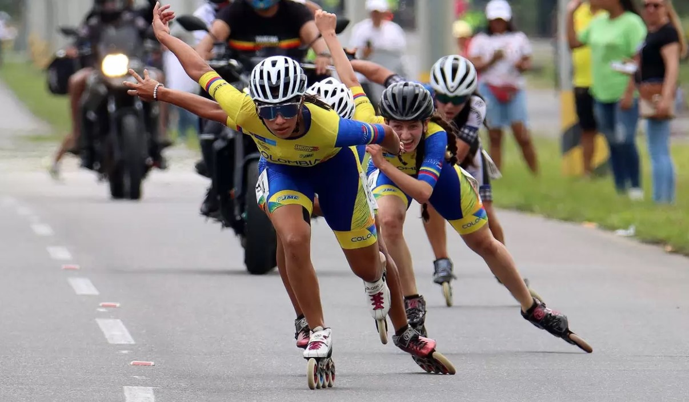

Aprende a patinar!
¿Por qué practicar patinaje de velocidad?
Si buscas un entrenamiento de cardio saludable para el corazón con el que trabajes tanto los músculos del tren superior como los del inferior y que se pueda hacer al aire libre, te recomendamos que te hagas con unos patines. Aunque se suela llamar a esta actividad "patinaje", el término técnico es patinaje en línea, ya que hay una serie de pequeñas diferencias en cuanto a la posición de las ruedas.
¿Sabias que...?
Colombia se ha consolidado como la gran potencia mundial del patinaje de velocidad, teniendo en cuenta los resultados en las campeonatos mundiales y en los recientemente creados World Skate Games de 2022.
Desde que se realizan oficialmente los mundiales de patinaje de velocidad en 1992, Colombia ha logrado 18 primeros lugares en el medallero general.
Esto le ha permitido ser la nación con mayor cantidad de medallas en el historial con un total de 366 oros, 234 platas y 174 bronces